KNM oefenen, Lezen A2, examen
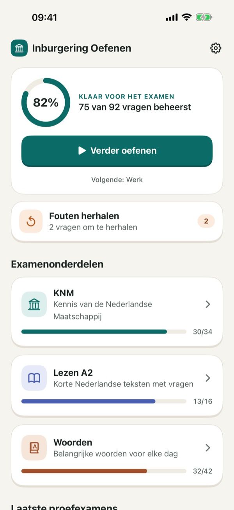
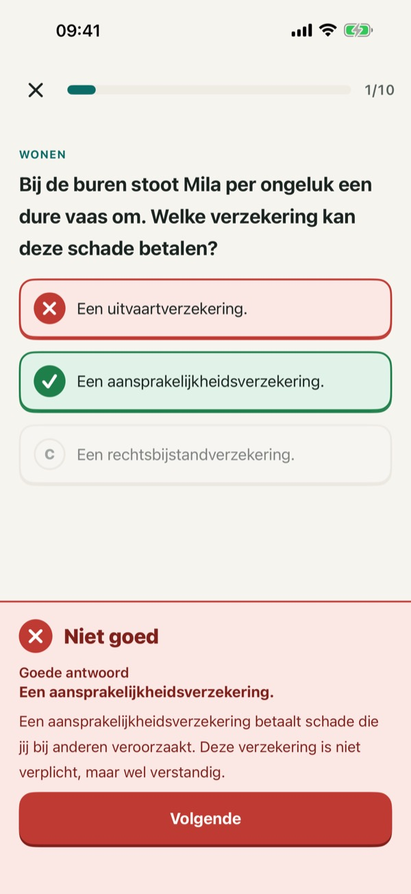
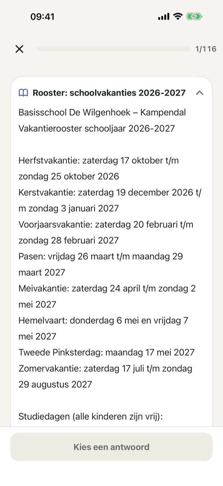
Slaag voor je inburgeringsexamen. Oefen alle 8 thema's van KNM (Kennis van de Nederlandse Maatschappij), lees korte teksten op A2-niveau en leer de belangrijkste woorden.
De vragen blijven in het Nederlands, net als in het echte examen. De uitleg lees je in je eigen taal.
Gratis: 4 onderwerpen (KNM Werk en inkomen, KNM Omgangsvormen, Lezen Brieven en e-mails, Woorden Wonen). Met één aankoop ontgrendel je alle onderwerpen, de proefexamens met tijd en de volledige woordentrainer: eenmalig betalen, geen abonnement, geen reclame.
Geen account nodig.
Deze app is onafhankelijk en niet verbonden aan DUO of de overheid. De vragen zijn zelf geschreven op basis van de officiële examenonderwerpen.
Privacybeleid: https://baytechbv.github.io/privacy/inburgering-examen/
Gebruiksvoorwaarden (EULA): https://www.apple.com/legal/internet-services/itunes/dev/stdeula/
Dutch integration exam prep
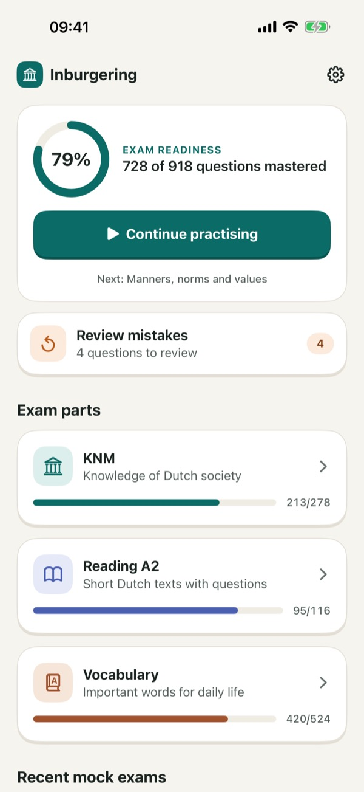
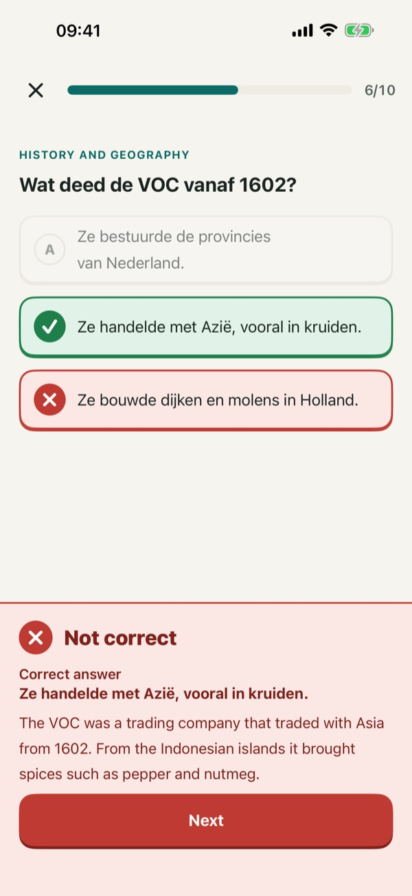
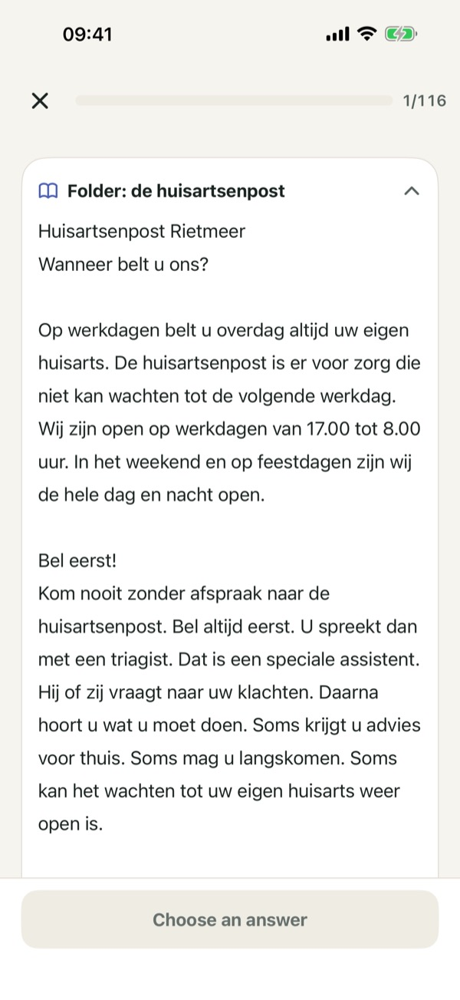
Pass your Dutch civic integration exam (inburgeringsexamen). Practise all 8 KNM themes (Knowledge of Dutch Society), read short A2-level Dutch texts and learn the key words.
Exam questions stay in Dutch, just like the real exam. You read the explanations in your own language.
Free: 4 topics (KNM Work and income, KNM Manners, norms and values, Reading Letters and emails, Vocabulary Housing). One purchase unlocks all topics, the timed mock exams and the full vocabulary trainer: pay once, no subscription, no ads.
No account needed.
This app is independent and not affiliated with DUO or the Dutch government. The questions are our own, based on the official exam topics.
Privacy: https://baytechbv.github.io/privacy/inburgering-examen/
Terms of Use (EULA): https://www.apple.com/legal/internet-services/itunes/dev/stdeula/
Hollanda uyum sınavı hazırlık
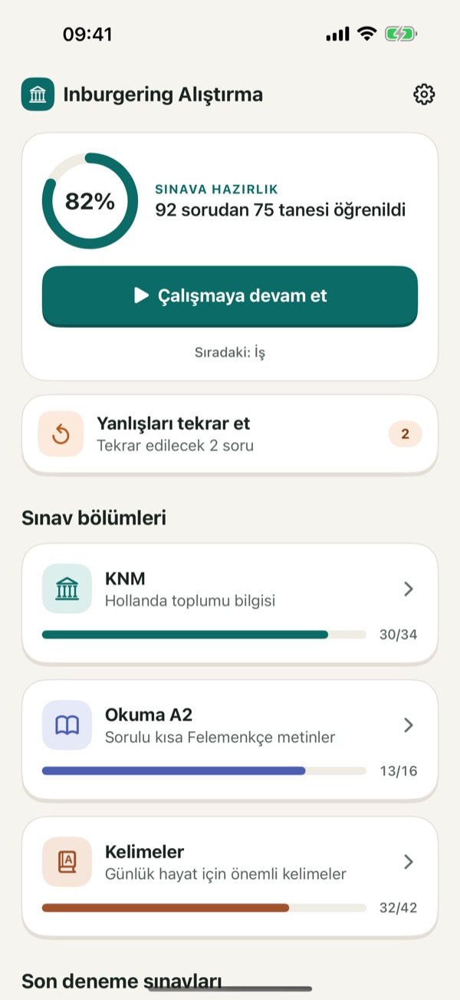
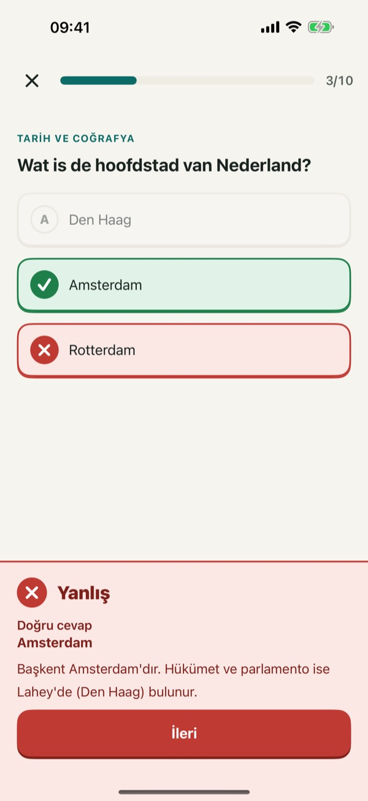
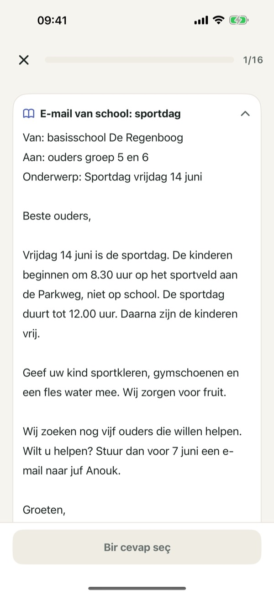
Hollanda uyum sınavını (inburgeringsexamen) geç. KNM'nin (Hollanda toplumu bilgisi) 8 temasının hepsini çalış, A2 seviyesinde kısa Felemenkçe metinler oku ve en önemli kelimeleri öğren.
Sınav soruları, gerçek sınavdaki gibi Felemenkçe kalır. Açıklamaları kendi dilinde okursun.
Ücretsiz: 4 konu (KNM İş ve gelir, KNM Görgü kuralları, Okuma Mektuplar ve e-postalar, Kelimeler Konut). Tek bir satın alma ile tüm konuların, süreli deneme sınavlarının ve tam kelime çalışmasının kilidi açılır: tek seferlik ödeme, abonelik yok, reklam yok.
Hesap gerekmez.
Bu uygulama bağımsızdır; DUO veya Hollanda hükümeti ile bağlantısı yoktur. Sorular resmi sınav konularına göre tarafımızdan yazılmıştır.
Gizlilik: https://baytechbv.github.io/privacy/inburgering-examen/
Kullanım Koşulları (EULA): https://www.apple.com/legal/internet-services/itunes/dev/stdeula/
تحضير امتحان الاندماج الهولندي
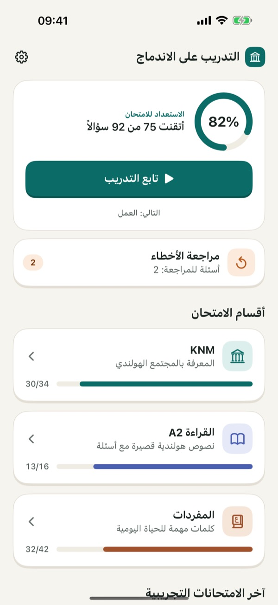
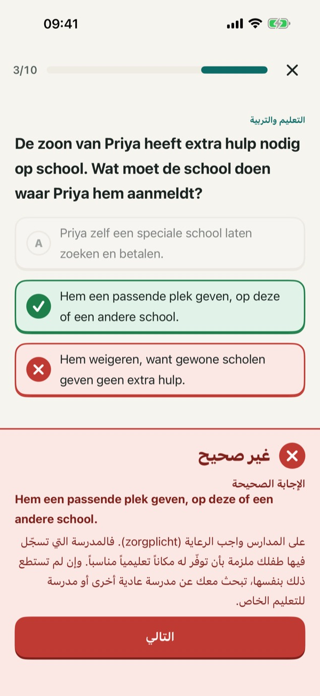
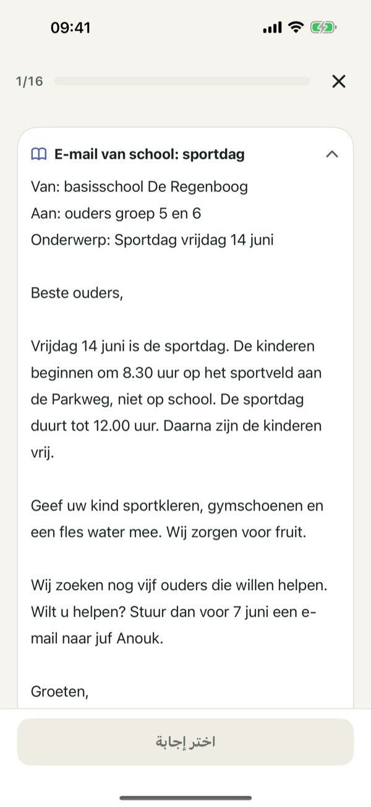
انجح في امتحان الاندماج الهولندي (inburgeringsexamen). تدرّب على محاور KNM الثمانية كلها (المعرفة بالمجتمع الهولندي)، واقرأ نصوصًا هولندية قصيرة بمستوى A2، وتعلّم أهم الكلمات.
تبقى أسئلة الامتحان باللغة الهولندية كما في الامتحان الحقيقي، وتقرأ الشرح بلغتك.
مجانًا: 4 مواضيع (KNM العمل والدخل، KNM آداب التعامل، القراءة: الرسائل والبريد الإلكتروني، المفردات: السكن). عملية شراء واحدة تفتح جميع المواضيع والامتحانات التجريبية بوقت محدد ومدرّب المفردات الكامل: دفعة واحدة، بلا اشتراك، بلا إعلانات.
لا حاجة إلى حساب.
هذا التطبيق مستقل وغير تابع لـ DUO أو للحكومة الهولندية. الأسئلة من تأليفنا استنادًا إلى مواضيع الامتحان الرسمية.
الخصوصية: https://baytechbv.github.io/privacy/inburgering-examen/
شروط الاستخدام (EULA): https://www.apple.com/legal/internet-services/itunes/dev/stdeula/